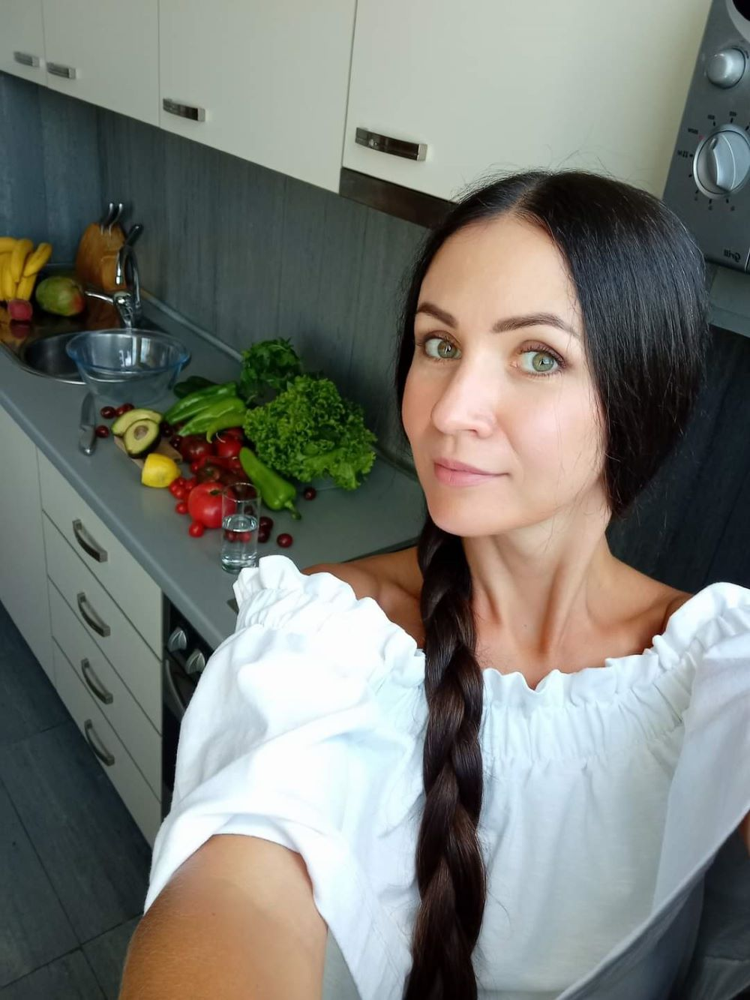

Привіт, друзі. Впевнена, що багатьом з вас цікава тема здорового харчування та гарного самопочуття.
Останні 10 років я займаюсь саме цими питанням.
Я постійно підвищую свій рівень знань та керуюсь інформацією з офіційних джерел й наукових досліджень.
Отримавши сертифікацію у сфері харчування в різних світових університетах (серед яких Stanford University,
the University of Edinburgh, Ludwig Maximilian University of Munich та інші), маю знання в області збалансованого харчування для покращення здоров’я,
дитячого харчування, способу життя та харчування під час вагітності, а також маю розуміння причин надмірної ваги й ожиріння та ролі гормонів в цих процесах.
Крім цього, я розробила свою власну стратегію, яку я назвала «Сімейне харчування», тому із задоволенням допоможу налагодити харчування для всієї родини,
щоб кожному було смачно й корисно, а також відносно не складно.
Якщо ви хочете прекрасно почуватись, бути здоровим та енергійним, зберегти молодість і красу, змінити звички та полюбити своє нове, здорове життя, я з радістю допоможу та скерую в цьому питанні.